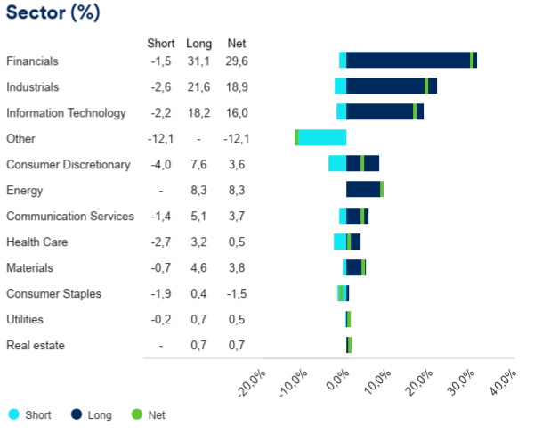
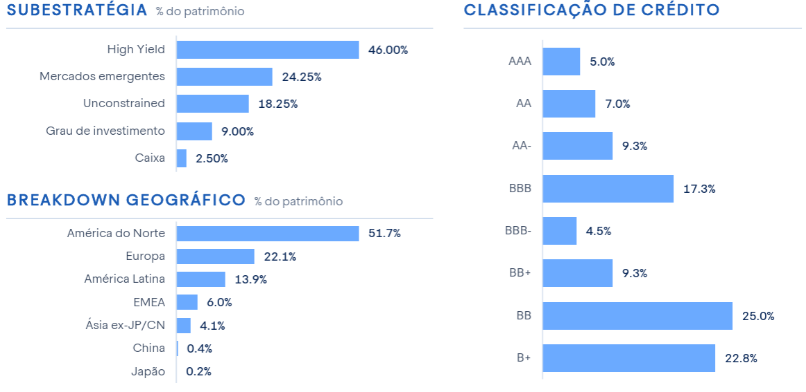
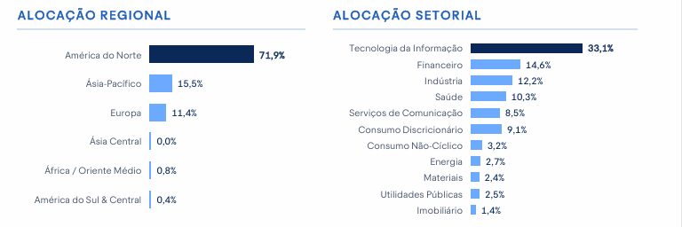

Schroder Gaia Egerton
Fundo Long/Short global com gestão fundamentalista, que busca capturar a valorização de empresas globais e reduzir a dependência do movimento geral do mercado.

- Retorno 12M
- 3,30%
- Aporte mínimo
- USD 1.000,00
- Resgate
- D+6
- ISIN
- LU0548376150
BTG Pactual SICAV Global Credit Fund
Estratégia de alocação internacional com foco em crédito global, gerenciada ativamente pela equipe de Portfolio Solutions do BTG Pactual. O fundo investe em fundos mútuos, ETFs e títulos diretos de crédito, com o objetivo de gerar renda e apreciação do capital no longo prazo.

- Yield
- 7,44% a.a.
- Aporte mínimo
- USD 1.000,00
- Resgate
- D+2 / D+6
- ISIN
- LU3435271443
BTG Pactual SICAV Global Equities
Estratégia global de alocação com foco em mercados globais de ações, gerenciada ativamente pela equipe de Portfolio Solutions do BTG Pactual. O fundo investe estrategicamente em fundos mútuos de ações, ETFs e ações diretas em regiões e setores. O objetivo é alcançar a valorização do capital a longo prazo por meio de exposição diversificada a mercados desenvolvidos e emergentes.

- Retorno 12M
- 6,31%
- Aporte mínimo
- USD 1.000,00
- Resgate
- D+2 / D+6
- ISIN
- LU3060589838